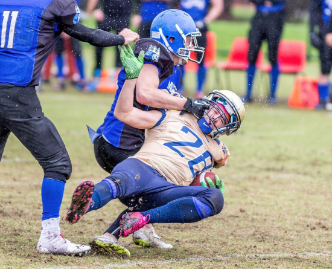

Esportes
Neste final de semana o Panathinaikos venceu em casa o Olympiacos por 2 a 1, em clássico cheio de confusões na Grécia. É, sem dúvida alguma, um dos maiores confrontos do planeta.
ler mais
NFL anuncia jogos para a temporada de 2023, incluindo cinco na Europa
A NFL anunciou quatro jogos selecionados para a temporada de 2023 na quarta-feira, incluindo a primeira partida da “Black Friday” entre o Miami Dolphins e o New York Jets.
ler maisLakers x Nuggets ao vivo na NBA: onde assistir ao Jogo 2 hoje e horário
Após vencer a primeira partida, Denver Nuggets atua novamente em casa, enquanto Los Angeles Lakers e LeBron James tentam a recuperação. Saiba todos os detalhes
ler maisEconomia
Primeira “cópia” do Bitcoin ganha novo fôlego e valoriza 20% em 10 dias
Crescimento está relacionado com aumento de preços nas taxas do Bitcoin
ler maisPrimeira “cópia” do Bitcoin ganha novo fôlego e valoriza 20% em 10 dias
Crescimento está relacionado com aumento de preços nas taxas do Bitcoin
ler mais